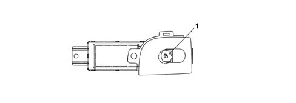

REAR DOOR CONTROL PANEL
- Path
- Descriptions > 70 FITTINGS > 7010 PASSENGER COMPARTMENT REAR SIDE DOORS > REAR DOOR CONTROL PANEL
- Kind
- system description
- Applies to
- all engines; all production periods
- Interactive page
- https://sloeber94.github.io/elrnDB-lThss/en/#/841005788
Applies to: all engines; all production periods
COMPOSITION

- 1 - Window closing control button
OPERATION
The electric windows for the driver and passenger side rear doors are controlled manually, automatically or using the remote control.
Manual system
The stopping and starting is determined manually using the control buttons. When the latter are released, the window stops.
Automatic system
The automatic mode involves starting the movement by pressing the control button for longer than a preset period.
The windows are stopped by:
- reaching the upper/lower window end of travel position;
- safety systems (safety sensors);
- after having pressed the up or down control (only with the ignition switched ON).
Remote system
It is possible, using the remote control, to open/close the windows in the doors by keeping the door unlocking/locking button pressed for more than 3 seconds; when it is released the opening/closing is interrupted.